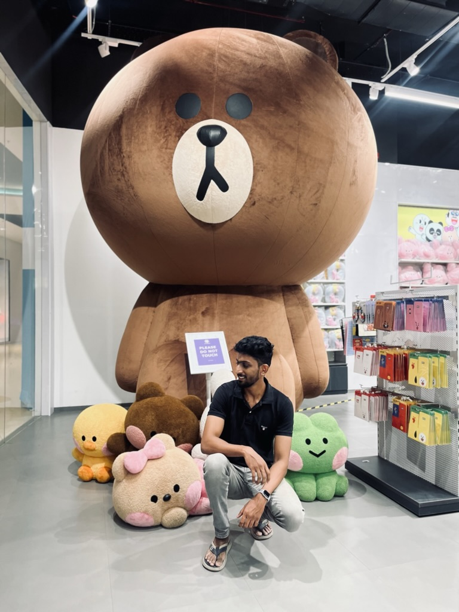

Hanif Khan

Summary :
Hanif Khan is a skilled and experienced web developer known for his expertise in creating
and maintaining dynamic and visually appealing websites. With a passion for technology and a strong background
in coding and programming, Hanif has proven his ability to deliver high-quality web solutions..
Education :
- Under Graduation - B.E Civil Engineering 2017 to 2021 (ANNA UNIVERSITY).
- Aspira Design Institute - UI/UX Certified programme 2022 to 2023.
- Velammal Bodhi matric - Higher secondary education 2015 to 2017.
Work experience :
- CAMU - Product based Edtech Software company (2021-2022)
- Worked as Product Analyst
- It is a company that provides educational databases and learning management system.
- As a product analyst, we provide training to staffs and students to how to use the product.
- UX/UI Designer - Freelancing. (2022- Present)
- Locomate - A location finder app that allows photographers to find locations for their photoshoots without any hastle.
- Burnout Fitness Studio - A Mobile application for the Burnout gym users to book their slots or gym packages.
- Bake Me a Wish - An application for a friend of mine who's a homebaker.
- See More..
Skills :
- Web development
- User experience / User interfaces
- HTML
- Mobile App designing
- Adobe suit
- Adobe photoshop
- Figma
- Prototyping
- Wireframing
- User testability
About
Contact
LinkdIN
Behance
Github